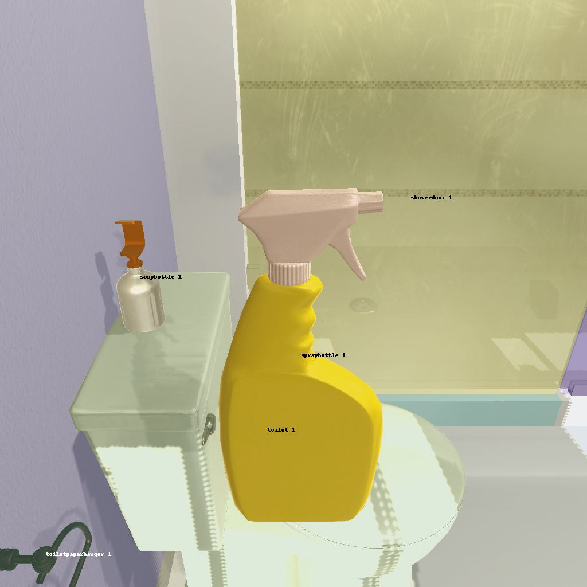

---------------------------------------------------------task: 28---------------------------------------------------------
--------------------------------------------------------------------------------------------------------------------------------------------------------------------
--------------------------------------------------------------------------------------------------------------------------------------------------------------------
Step:--------------------------------------------------------------------------12-------------------------------------------------------------------------------
----------------------------------------
VLM Prompt:
Image1:
Image2:
Image3:
**Instruction**
1. Analyze the provided image to identify all visible household objects, focusing on those relevant to the task description "put two spraybottle in toilet."
2. Use the analysis of the image and the task hint "The agent must find an object of the desired type, pick it up, find the correct location to place it, put it down there, then look for another object of the desired type, pick it up, return to previous location, and put it down there with the other object." to answer the question: what is the most reasonable action in the choices for the task description "put two spraybottle in toilet"?
4. Decide and write the answer using the template: The answer is: (i): , where i is the real number. If there is no desired object in the image, search every place based on **Initial Observation** to find the object. And if no one is exactly correct, choose a similar answer.
**Initial Observation**
You are in the middle of a room. Looking quickly around you, you can see bathtub (1), bathtubbasin (1), cart (1), sink (1), garbagecan (1), sinkbasin (1), countertop (1), drawer (1-4), toilet (1), toiletpaperhanger (1)
**Answer Choices**
(1): go to bathtub 1
(2): go to bathtubbasin 1
(3): go to cart 1
(4): go to sink 1
(5): go to garbagecan 1
(6): go to sinkbasin 1
(7): go to countertop 1
(8): go to drawer 1
(9): go to drawer 2
(10): go to drawer 3
(11): go to drawer 4
(12): go to toiletpaperhanger 1
(13): put spraybottle 1 in/on toilet 1
(14): examine toilet 1
**Answer**
Let's think step by step by following the instructions.
----------------------------------------
----------------------------------------
Original Response:
First, we need to identify the spraybottles. In Image1 and Image2, we can see "spraybottle 1" clearly labeled on the yellow spray bottle. There is no second spray bottle visible in any of the images.
Since we need to put two spray bottles in the toilet and we can only see one, the next logical step would be to search for another spray bottle. The initial observation lists a number of places where objects could be found. The most likely places to find a spray bottle would be either on the countertop, in a drawer, or perhaps on the cart if it holds cleaning supplies.
Since we are already at the countertop 1 in Image1 and there is no second spray bottle there, our next step should be to check the drawers or the cart. Checking the drawers might be more fruitful as they can store items, whereas the cart might not necessarily contain a spray bottle.
The answer is: (10): go to drawer 3
----------------------------------------
----------------------------------------
>>> Refine Original VLM Response and Get Pure Action: go to drawer 3
----------------------------------------
-----------------------------------------------------------------
Running time: 12.428097009658813 seconds
Total Money: 18.29547
-----------------------------------------------------------------
-----------------------------------------------------------------
Text Observation:You arrive at loc 9. The drawer 3 is closed.
-----------------------------------------------------------------
UNSUCCEED